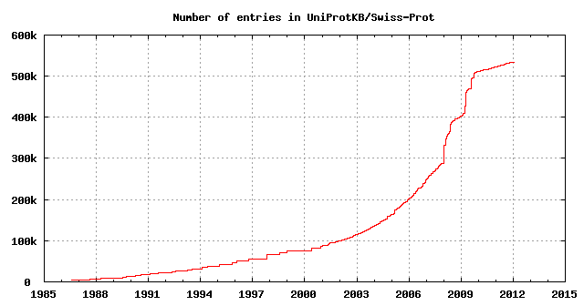
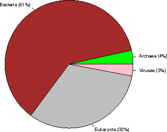
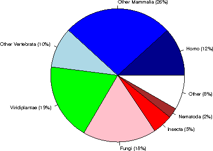
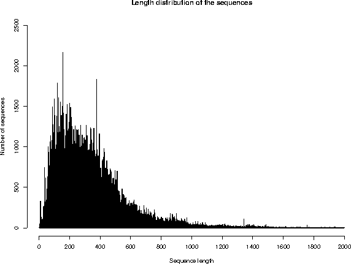

Due to maintenance work, this ExPASy service will be unavailable from Sunday January 29th, 2012 to Wednesday February 1st, 2012.
UniProtKB/Swiss-Prot protein knowledgebase release 2012_01 statistics
1. INTRODUCTION
Release 2012_01 of 25-Jan-12 of UniProtKB/Swiss-Prot contains 534242 sequence entries,
comprising 189454791 amino acids abstracted from 206707 references.
599 sequences have been added since release 2011_12, the sequence data of
161 existing entries has been updated and the annotations of
330457 entries have been revised.
Number of fragments: 8989
Number of additional sequences produced by alternative splicing, initiation or promoter usage, or ribosomal frameshifting: 30917
Protein existence (PE): entries %
1: Evidence at protein level 73864 13.8%
2: Evidence at transcript level 69920 13.1%
3: Inferred from homology 374128 70%
4: Predicted 14450 2.7%
5: Uncertain 1880 0.4%
The growth of the database is summarized below.

2. TAXONOMIC ORIGIN
Total number of species represented in this release of UniProtKB/Swiss-Prot: 12712
The first twenty species represent 111093 sequences: 20.8 % of the total
number of entries.
2.1 Table of the frequency of occurrence of species
Species represented 1x: 5357
2x: 1851
3x: 958
4x: 627
5x: 462
6x: 371
7x: 273
8x: 214
9x: 196
10x: 111
11- 20x: 654
21- 50x: 391
51-100x: 209
>100x: 1038
2.2 Table of the most represented species
------ --------- --------------------------------------------
Number Frequency Species
------ --------- --------------------------------------------
1 20242 Homo sapiens (Human)
2 16428 Mus musculus (Mouse)
3 10910 Arabidopsis thaliana (Mouse-ear cress)
4 7682 Rattus norvegicus (Rat)
5 6619 Saccharomyces cerevisiae (strain ATCC 204508 / S288c) (Baker's yeast)
6 5879 Bos taurus (Bovine)
7 4976 Schizosaccharomyces pombe (strain 972 / ATCC 24843) (Fission yeast)
8 4430 Escherichia coli (strain K12)
9 4244 Bacillus subtilis
10 4122 Dictyostelium discoideum (Slime mold)
11 3341 Caenorhabditis elegans
12 3327 Xenopus laevis (African clawed frog)
13 3137 Drosophila melanogaster (Fruit fly)
14 2827 Oryza sativa subsp. japonica (Rice)
15 2773 Danio rerio (Zebrafish) (Brachydanio rerio)
16 2224 Gallus gallus (Chicken)
17 2216 Pongo abelii (Sumatran orangutan)
18 2011 Escherichia coli O157:H7
19 1911 Mycobacterium tuberculosis
20 1794 Salmonella typhimurium
21 1787 Methanocaldococcus jannaschii
22 1707 Haemophilus influenzae (strain ATCC 51907 / DSM 11121 / KW20 / Rd)
23 1678 Shigella flexneri
24 1675 Escherichia coli O6
25 1616 Xenopus tropicalis (Western clawed frog) (Silurana tropicalis)
26 1407 Sus scrofa (Pig)
27 1346 Salmonella typhi
28 1244 Mycobacterium bovis
29 1221 Pseudomonas aeruginosa (strain ATCC 15692 / PAO1 / 1C / PRS 101 / LMG 12228)
30 1169 Macaca fascicularis (Crab-eating macaque) (Cynomolgus monkey)
31 1026 Synechocystis sp. (strain PCC 6803 / Kazusa)
32 1011 Yersinia pestis
33 1000 Archaeoglobus fulgidus
34 954 Vibrio cholerae
35 930 Salmonella paratyphi A
36 925 Ashbya gossypii (strain ATCC 10895 / CBS 109.51 / FGSC 9923 / NRRL Y-1056)
37 925 Staphylococcus aureus (strain N315)
38 923 Staphylococcus aureus (strain Mu50 / ATCC 700699)
39 909 Acanthamoeba polyphaga mimivirus (APMV)
40 901 Kluyveromyces lactis
41 899 Staphylococcus aureus (strain COL)
42 895 Staphylococcus aureus (strain MW2)
43 889 Staphylococcus aureus (strain MSSA476)
44 888 Escherichia coli O6:K15:H31 (strain 536 / UPEC)
45 888 Staphylococcus aureus (strain MRSA252)
46 884 Oryctolagus cuniculus (Rabbit)
47 882 Salmonella choleraesuis
48 878 Shigella sonnei (strain Ss046)
49 868 Rhizobium meliloti (strain 1021) (Ensifer meliloti) (Sinorhizobium meliloti)
50 864 Yersinia pseudotuberculosis
51 861 Candida glabrata
52 841 Escherichia coli O9:H4 (strain HS)
53 834 Escherichia coli O139:H28 (strain E24377A / ETEC)
54 829 Shigella boydii serotype 4 (strain Sb227)
55 828 Neurospora crassa
56 824 Escherichia coli (strain UTI89 / UPEC)
57 819 Escherichia coli (strain ATCC 8739 / DSM 1576 / Crooks)
58 817 Shigella dysenteriae serotype 1 (strain Sd197)
59 799 Canis familiaris (Dog) (Canis lupus familiaris)
60 795 Vibrio parahaemolyticus
61 791 Escherichia coli (strain SMS-3-5 / SECEC)
62 783 Erwinia carotovora subsp. atroseptica (Pectobacterium atrosepticum)
63 776 Aquifex aeolicus (strain VF5)
64 773 Pasteurella multocida (strain Pm70)
65 771 Escherichia coli (strain K12 / DH10B)
66 765 Escherichia coli O127:H6 (strain E2348/69 / EPEC)
67 765 Escherichia coli (strain K12 / MC4100 / BW2952)
68 764 Escherichia coli O17:K52:H18 (strain UMN026 / ExPEC)
69 763 Emericella nidulans
70 762 Escherichia coli (strain 55989 / EAEC)
71 761 Escherichia coli O8 (strain IAI1)
72 760 Shigella flexneri serotype 5b (strain 8401)
73 759 Staphylococcus epidermidis (strain ATCC 35984 / RP62A)
74 758 Streptomyces coelicolor
75 757 Staphylococcus epidermidis (strain ATCC 12228)
76 756 Escherichia coli (strain SE11)
77 756 Escherichia coli O45:K1 (strain S88 / ExPEC)
78 753 Escherichia coli O7:K1 (strain IAI39 / ExPEC)
79 748 Escherichia coli O157:H7 (strain EC4115 / EHEC)
80 743 Photorhabdus luminescens subsp. laumondii (strain TT01)
81 735 Yersinia enterocolitica serotype O:8 / biotype 1B (strain 8081)
82 734 Bacillus halodurans
83 734 Staphylococcus aureus (strain NCTC 8325)
84 733 Vibrio vulnificus
85 731 Escherichia coli O81 (strain ED1a)
86 730 Bacillus anthracis
87 721 Salmonella enteritidis PT4 (strain P125109)
88 717 Vibrio vulnificus (strain YJ016)
89 716 Salmonella paratyphi B (strain ATCC BAA-1250 / SPB7)
90 715 Yersinia pestis bv. Antiqua (strain Nepal516)
91 714 Salmonella paratyphi A (strain AKU_12601)
92 713 Enterobacter sp. (strain 638)
93 713 Salmonella agona (strain SL483)
94 713 Escherichia coli O1:K1 / APEC
95 713 Salmonella newport (strain SL254)
96 713 Yersinia pseudotuberculosis serotype O:1b (strain IP 31758)
97 712 Klebsiella pneumoniae subsp. pneumoniae (strain ATCC 700721 / MGH 78578)
98 712 Salmonella schwarzengrund (strain CVM19633)
99 711 Yersinia pestis bv. Antiqua (strain Antiqua)
100 710 Salmonella heidelberg (strain SL476)
101 702 Salmonella dublin (strain CT_02021853)
102 698 Shigella boydii serotype 18 (strain CDC 3083-94 / BS512)
103 696 Klebsiella pneumoniae (strain 342)
104 694 Escherichia fergusonii (strain ATCC 35469 / DSM 13698 / CDC 0568-73)
105 689 Zea mays (Maize)
106 687 Mycoplasma pneumoniae (strain ATCC 29342 / M129)
107 687 Candida albicans (strain SC5314 / ATCC MYA-2876) (Yeast)
108 687 Nostoc sp. (strain PCC 7120 / UTEX 2576)
109 686 Pan troglodytes (Chimpanzee)
110 683 Salmonella gallinarum (strain 287/91 / NCTC 13346)
111 677 Citrobacter koseri (strain ATCC BAA-895 / CDC 4225-83 / SGSC4696)
112 675 Pseudomonas putida (strain KT2440)
113 675 Pseudomonas syringae pv. tomato (strain DC3000)
114 669 Serratia proteamaculans (strain 568)
115 668 Mycobacterium leprae
116 667 Yersinia pestis (strain Pestoides F)
117 666 Staphylococcus aureus (strain USA300)
118 658 Rhizobium sp. (strain NGR234)
119 656 Bradyrhizobium japonicum
120 653 Debaryomyces hansenii
121 646 Bacillus cereus (strain ATCC 14579 / DSM 31)
122 643 Escherichia coli
123 643 Staphylococcus aureus (strain bovine RF122 / ET3-1)
124 641 Salmonella arizonae (strain ATCC BAA-731 / CDC346-86 / RSK2980)
125 639 Yarrowia lipolytica (strain CLIB 122 / E 150) (Yeast) (Candida lipolytica)
126 638 Yersinia pseudotuberculosis serotype O:3 (strain YPIII)
127 634 Yersinia pseudotuberculosis serotype IB (strain PB1/+)
128 629 Agrobacterium tumefaciens (strain C58 / ATCC 33970)
129 629 Neosartorya fumigata (strain ATCC MYA-4609 / Af293 / CBS 101355 / FGSC A1100)
130 628 Shewanella oneidensis
131 621 Cronobacter sakazakii (strain ATCC BAA-894) (Enterobacter sakazakii)
132 615 Treponema pallidum (strain Nichols)
133 612 Staphylococcus haemolyticus (strain JCSC1435)
134 608 Methanobacterium thermoautotrophicum (strain Delta H)
135 605 Rhizobium loti (strain MAFF303099) (Mesorhizobium loti)
136 602 Listeria monocytogenes
137 602 Staphylococcus saprophyticus subsp. saprophyticus
138 601 Salmonella paratyphi C (strain RKS4594)
139 601 Ralstonia solanacearum (strain GMI1000) (Pseudomonas solanacearum)
140 601 Photobacterium profundum (Photobacterium sp. (strain SS9))
141 600 Yersinia pestis bv. Antiqua (strain Angola)
142 600 Xanthomonas campestris pv. campestris
143 590 Bacillus cereus (strain ATCC 10987)
144 590 Listeria innocua
145 589 Pectobacterium carotovorum subsp. carotovorum (strain PC1)
146 587 Oryza sativa subsp. indica (Rice)
147 585 Rickettsia prowazekii (strain Madrid E)
148 581 Neisseria meningitidis serogroup B
149 576 Brucella suis biovar 1 (strain 1330)
150 572 Brucella melitensis biotype 1 (strain 16M / ATCC 23456 / NCTC 10094)
151 572 Helicobacter pylori (strain ATCC 700392 / 26695) (Campylobacter pylori)
152 572 Buchnera aphidicola subsp. Acyrthosiphon pisum (strain APS)
153 567 Bacillus thuringiensis subsp. konkukian (strain 97-27)
154 565 Helicobacter pylori (strain J99) (Campylobacter pylori J99)
155 565 Pseudomonas syringae pv. syringae (strain B728a)
156 562 Caulobacter crescentus (Caulobacter vibrioides)
157 562 Bacillus licheniformis (strain DSM 13 / ATCC 14580)
158 562 Buchnera aphidicola subsp. Schizaphis graminum (strain Sg)
159 561 Caenorhabditis briggsae
160 560 Vibrio fischeri (strain ATCC 700601 / ES114)
161 560 Bacillus cereus (strain ZK / E33L)
162 558 Clostridium acetobutylicum
163 558 Pseudomonas aeruginosa (strain UCBPP-PA14)
164 556 Neisseria meningitidis serogroup A
165 556 Xanthomonas axonopodis pv. citri (Citrus canker)
166 552 Pseudomonas fluorescens (strain Pf0-1)
167 551 Oceanobacillus iheyensis (strain DSM 14371 / JCM 11309 / KCTC 3954 / HTE831)
168 546 Pseudomonas fluorescens (strain Pf-5 / ATCC BAA-477)
169 544 Pseudomonas syringae pv. phaseolicola (strain 1448A / Race 6)
170 531 Erwinia tasmaniensis (strain DSM 17950 / Et1/99)
171 530 Lactococcus lactis subsp. lactis (strain IL1403) (Streptococcus lactis)
172 529 Listeria monocytogenes serotype 4b (strain F2365)
173 527 Streptococcus pneumoniae
174 527 Sodalis glossinidius (strain morsitans)
175 523 Thermotoga maritima
176 522 Xylella fastidiosa
177 520 Bordetella bronchiseptica (strain ATCC BAA-588 / NCTC 13252 / RB50)
178 514 Chromobacterium violaceum
179 512 Bordetella pertussis
180 512 Xylella fastidiosa (strain Temecula1 / ATCC 700964)
181 511 Pseudomonas aeruginosa (strain PA7)
182 511 Vibrio cholerae serotype O1 (strain ATCC 39541 / Ogawa 395 / O395)
183 510 Haemophilus ducreyi (strain 35000HP / ATCC 700724)
184 508 Bordetella parapertussis
185 507 Buchnera aphidicola subsp. Baizongia pistaciae (strain Bp)
186 507 Geobacillus kaustophilus (strain HTA426)
187 506 Staphylococcus aureus (strain Newman)
188 501 Deinococcus radiodurans
189 500 Pseudomonas entomophila (strain L48)
190 499 Brucella abortus biovar 1 (strain 9-941)
191 497 Corynebacterium glutamicum (Brevibacterium flavum)
192 497 Rickettsia conorii (strain ATCC VR-613 / Malish 7)
193 496 Bacillus clausii (strain KSM-K16)
194 494 Haemophilus influenzae (strain 86-028NP)
195 494 Streptomyces avermitilis
196 493 Burkholderia pseudomallei (Pseudomonas pseudomallei)
197 492 Bacillus amyloliquefaciens (strain FZB42)
198 491 Proteus mirabilis (strain HI4320)
199 491 Xanthomonas campestris pv. campestris (strain 8004)
200 490 Vibrio harveyi (strain ATCC BAA-1116 / BB120)
201 490 Clostridium perfringens
202 487 Shewanella sp. (strain MR-7)
203 485 Methanosarcina acetivorans (strain ATCC 35395 / DSM 2834 / JCM 12185 / C2A)
204 485 Mannheimia succiniciproducens (strain MBEL55E)
205 484 Pseudomonas aeruginosa (strain LESB58)
206 484 Staphylococcus aureus (strain Mu3 / ATCC 700698)
207 484 Shewanella sp. (strain MR-4)
208 483 Mycoplasma genitalium (strain ATCC 33530 / G-37 / NCTC 10195)
209 480 Acinetobacter sp. (strain ADP1)
210 478 Thermosynechococcus elongatus (strain BP-1)
211 476 Enterococcus faecalis (Streptococcus faecalis)
212 476 Synechococcus elongatus (strain PCC 7942) (Anacystis nidulans R2)
213 475 Pyrococcus horikoshii
214 474 Burkholderia sp. (strain 383) (Burkholderia cepacia
215 474 Pseudomonas putida (strain F1 / ATCC 700007)
216 473 Brucella abortus (strain 2308)
217 473 Aspergillus oryzae (strain ATCC 42149 / RIB 40) (Yellow koji mold)
218 466 Xanthomonas campestris pv. vesicatoria (strain 85-10)
219 466 Shewanella frigidimarina (strain NCIMB 400)
220 466 Pseudomonas putida (strain GB-1)
221 465 Pyrococcus abyssi (strain GE5 / Orsay)
222 464 Halobacterium salinarium (strain ATCC 700922 / JCM 11081 / NRC-1)
223 463 Aeromonas hydrophila subsp. hydrophila (strain ATCC 7966 / NCIB 9240)
224 463 Shewanella sp. (strain ANA-3)
225 463 Methanosarcina mazei
226 462 Streptococcus pneumoniae (strain ATCC BAA-255 / R6)
227 462 Anabaena variabilis (strain ATCC 29413 / PCC 7937)
228 462 Cupriavidus necator (strain ATCC 17699 / H16 / DSM 428 / Stanier 337)
229 462 Rhodopseudomonas palustris (strain ATCC BAA-98 / CGA009)
230 461 Burkholderia mallei (Pseudomonas mallei)
231 458 Cupriavidus pinatubonensis (strain JMP134 / LMG 1197) (Alcaligenes eutrophus)
232 458 Lactobacillus plantarum (strain ATCC BAA-793 / NCIMB 8826 / WCFS1)
233 455 Staphylococcus aureus (strain JH1)
234 454 Xanthomonas oryzae pv. oryzae (strain MAFF 311018)
235 453 Rhodobacter sphaeroides (strain ATCC 17023 / 2.4.1 / NCIB 8253 / DSM 158)
236 453 Pseudomonas putida (strain W619)
237 453 Rickettsia felis (strain ATCC VR-1525 / URRWXCal2) (Rickettsia azadi)
238 452 Methylococcus capsulatus (strain ATCC 33009 / NCIMB 11132 / Bath)
239 452 Ovis aries (Sheep)
240 452 Shewanella baltica (strain OS185)
241 451 Aeromonas salmonicida (strain A449)
242 450 Pyrococcus furiosus (strain ATCC 43587 / DSM 3638 / JCM 8422 / Vc1)
243 450 Streptococcus mutans
244 449 Thermoanaerobacter tengcongensis
245 449 Staphylococcus aureus (strain JH9)
246 448 Mycobacterium paratuberculosis
247 448 Hahella chejuensis (strain KCTC 2396)
248 447 Vibrio fischeri (strain MJ11)
249 445 Nicotiana tabacum (Common tobacco)
250 445 Pseudomonas mendocina (strain ymp)
2.3 Taxonomic distribution of the sequences

Kingdom sequences (% of the database)
Archaea 18732 ( 4%)
Bacteria 327591 ( 61%)
Eukaryota 171909 ( 32%)
Viruses 16010 ( 3%)
Within Eukaryota:

Category sequences (% of Eukaryota) (% of the complete database)
Human 20243 ( 12%) ( 4%)
Other Mammalia 45362 ( 26%) ( 8%)
Other Vertebrata 16862 ( 10%) ( 3%)
Viridiplantae 32007 ( 19%) ( 6%)
Fungi 30520 ( 18%) ( 6%)
Insecta 8344 ( 5%) ( 2%)
Nematoda 4208 ( 2%) ( 1%)
Other 14363 ( 8%) ( 3%)
3. SEQUENCE SIZE
Repartition of the sequences by size (excluding fragments)
From To Number From To Number
1- 50 8679 1001-1100 3679
51- 100 41008 1101-1200 2558
101- 150 57126 1201-1300 1991
151- 200 57322 1301-1400 1847
201- 250 56042 1401-1500 1492
251- 300 49421 1501-1600 725
301- 350 49579 1601-1700 543
351- 400 42890 1701-1800 453
401- 450 35196 1801-1900 416
451- 500 28261 1901-2000 336
501- 550 20053 2001-2100 206
551- 600 14353 2101-2200 276
601- 650 12122 2201-2300 287
651- 700 8751 2301-2400 170
701- 750 7194 2401-2500 136
751- 800 5106 >2500 1061
801- 850 4476
851- 900 4971
901- 950 3824
951-1000 2703

The average sequence length in UniProtKB/Swiss-Prot is 354 amino acids.
The shortest sequence is GWA_SEPOF (P83570): 2 amino acids.
The longest sequence is TITIN_MOUSE (A2ASS6): 35213 amino acids.
4. JOURNAL CITATIONS
Note: the following citation statistics reflect the number of distinct
journal citations.
Total number of journals cited in this release of UniProtKB/Swiss-Prot: 2212
4.1 Table of the frequency of journal citations
Journals cited 1x: 719
2x: 284
3x: 150
4x: 104
5x: 101
6x: 75
7x: 45
8x: 41
9x: 28
10x: 29
11- 20x: 174
21- 50x: 185
51-100x: 102
>100x: 175
4.2 List of the most cited journals in UniProtKB/Swiss-Prot
Nb Citations Journal name
-- --------- -------------------------------------------------------------
1 19797 Journal of Biological Chemistry
2 9026 Proceedings of the National Academy of Sciences of the U.S.A.
3 5366 Journal of Bacteriology
4 4841 Biochemical and Biophysical Research Communications
5 4553 Gene
6 4418 Nucleic Acids Research
7 4182 FEBS Letters
8 4178 Biochemistry
9 4052 The EMBO Journal
10 3781 Molecular and Cellular Biology
11 3522 Nature
12 3340 Journal of Molecular Biology
13 3178 European Journal of Biochemistry
14 3107 Biochimica et Biophysica Acta
15 2909 Cell
16 2496 Genomics
17 2340 Journal of Virology
18 2340 Biochemical Journal
19 2317 Science
20 1903 Molecular Microbiology
21 1762 Journal of Cell Biology
22 1610 Plant Physiology
23 1565 Plant Molecular Biology
24 1512 Genes and Development
25 1495 Virology
26 1467 The American Journal of Human Genetics
27 1424 Nature Genetics
28 1398 Human Molecular Genetics
29 1372 Oncogene
30 1318 Molecular and General Genetics
31 1268 Development
32 1211 Human Mutation
33 1205 Journal of Biochemistry
34 1189 Molecular Biology of the Cell
35 1127 The Plant Cell
36 1113 Journal of Immunology
37 1048 Genetics
38 1017 Molecular Cell
39 994 Structure
40 989 Journal of General Virology
41 981 The Plant Journal
42 916 Blood
43 915 Infection and Immunity
44 880 Archives of Biochemistry and Biophysics
45 865 Journal of Cell Science
46 793 Microbiology
47 786 Developmental Biology
48 779 Yeast
49 766 Cancer Research
50 741 Current Biology
51 687 FEMS Microbiology Letters
52 615 Human Genetics
53 615 Nature Structural Biology
54 615 Acta Crystallographica, Section D
55 611 Mechanisms of Development
56 609 Protein Science
57 598 Journal of Neuroscience
58 583 Applied and Environmental Microbiology
59 566 Neuron
60 564 Toxicon
61 553 Journal of Clinical Investigation
62 536 Current Genetics
63 511 American Journal of Physiology
64 503 The Journal of Experimental Medicine
65 478 Mammalian Genome
66 467 Molecular Endocrinology
67 453 Immunogenetics
68 443 Journal of Neurochemistry
69 437 Proteins
70 436 The Journal of Clinical Endocrinology and Metabolism
71 426 Molecular and Biochemical Parasitology
72 421 Endocrinology
73 398 Bioscience, Biotechnology, and Biochemistry
74 394 Nature Cell Biology
75 389 Journal of Molecular Evolution
76 387 Plant and Cell Physiology
77 385 Journal of Medical Genetics
78 373 DNA and Cell Biology
79 368 Molecular Biology and Evolution
80 361 DNA Sequence
81 351 Experimental Cell Research
82 325 Peptides
83 323 Brain Research. Molecular Brain Research
84 321 Tissue Antigens
85 311 Comparative Biochemistry and Physiology
86 294 PLoS ONE
87 293 Biological Chemistry Hoppe-Seyler
88 293 Antimicrobial Agents and Chemotherapy
89 292 Journal of Investigative Dermatology
90 288 Developmental Cell
91 286 Molecular Pharmacology
92 285 RNA
93 277 Cytogenetics and Cell Genetics
94 272 Biology of Reproduction
95 271 Neurology
96 261 Developmental Dynamics
97 261 Virus Research
98 257 Genome Research
99 257 Planta
100 255 The FEBS Journal
101 253 Nature Structural and Molecular Biology
102 252 Journal of General Microbiology
103 242 Molecular Plant-Microbe Interactions
104 233 Immunity
105 227 EMBO Reports
106 224 European Journal of Immunology
107 219 Biochimie
108 219 Genes to Cells
109 218 Hoppe-Seyler's Zeitschrift fur Physiologische Chemie
110 216 The New England Journal of Medicine
111 216 Eukaryotic Cell
112 216 Annals of Neurology
113 212 The FASEB Journal
114 210 European Journal of Human Genetics
115 210 DNA Research
116 199 Journal of Human Genetics
117 186 Investigative Ophthalmology and Visual Science
118 186 Archives of Virology
119 182 Molecular and Cellular Endocrinology
120 178 Archives of Microbiology
121 172 American Journal of Medical Genetics. Part A
122 171 Molecular Immunology
123 170 BMC Genomics
124 170 Journal of the American Chemical Society
125 169 Insect Biochemistry and Molecular Biology
126 169 Journal of Cellular Biochemistry
127 168 Diabetes
128 167 American Journal of Medical Genetics
129 167 Molecular Phylogenetics and Evolution
130 166 Glycobiology
131 166 Clinical Genetics
132 162 Nature Immunology
133 159 DNA
134 158 Journal of Medicinal Chemistry
135 158 International Journal of Cancer
136 156 Molecular Reproduction and Development
137 155 Hemoglobin
138 153 Bioorganicheskaia Khimiia
139 149 Circulation Research
140 146 Molecular Genetics and Metabolism
141 145 Molecular and Cellular Neuroscience
142 144 Biological Chemistry
143 142 Molecular Genetics and Genomics
144 139 British Journal of Haematology
145 138 General and Comparative Endocrinology
146 138 Animal Genetics
147 135 Acta Crystallographica, Section F
148 133 Phytochemistry
149 132 Proteomics
150 131 Journal of Lipid Research
5. STATISTICS FOR SOME LINE TYPES
The following table summarizes the total number of some UniProtKB/Swiss-Prot lines,
as well as the number of entries with at least one such line, and the
frequency of the lines.
Total Number of Average
Line type / subtype number entries per entry
------------------------------------ -------- --------- ---------
References (RL) 1003995 1.88
Journal 798602 408748 1.49 1
Submitted to EMBL/GenBank/DDBJ 196545 176490 0.37 2
Submitted to other databases 6706 6250 0.01 3
Book citation 687 673 <0.01 4
Plant Gene Register 576 564 <0.01 5
Thesis 403 400 <0.01 6
Unpublished observations 284 280 <0.01 7
Patent 186 183 <0.01 8
Worm Breeder's Gazette 6 6 <0.01 9
Total number of distinct authors cited in UniProtKB/Swiss-Prot: 316810
Total Number of Average
Line type / subtype number entries per entry Rank
------------------------------------ -------- --------- --------- ----
Comments (CC) 2353047 4.40
ALLERGEN 512 512 <0.01 26
ALTERNATIVE PRODUCTS 20282 20282 0.04 13
BIOPHYSICOCHEMICAL PROPERTIES 3947 3947 0.01 23
BIOTECHNOLOGY 321 319 <0.01 28
CATALYTIC ACTIVITY 238186 216349 0.45 4
CAUTION 7818 7663 0.01 19
COFACTOR 103281 94921 0.19 7
DEVELOPMENTAL STAGE 9493 9493 0.02 16
DISEASE 4892 3287 0.01 21
DISRUPTION PHENOTYPE 4272 4272 0.01 22
DOMAIN 36538 32364 0.07 11
ENZYME REGULATION 10264 10264 0.02 15
FUNCTION 408943 392122 0.77 2
INDUCTION 13784 13784 0.03 14
INTERACTION 9090 9090 0.02 17
MASS SPECTROMETRY 4994 3795 0.01 20
MISCELLANEOUS 31099 28677 0.06 12
PATHWAY 131097 118905 0.25 6
PHARMACEUTICAL 85 85 <0.01 29
POLYMORPHISM 847 801 <0.01 24
PTM 42179 33645 0.08 8
RNA EDITING 623 623 <0.01 25
SEQUENCE CAUTION 40183 40183 0.08 9
SIMILARITY 629930 509409 1.18 1
SUBCELLULAR LOCATION 319235 313707 0.60 3
SUBUNIT 235324 235324 0.44 5
TISSUE SPECIFICITY 36602 36602 0.07 10
TOXIC DOSE 492 478 <0.01 27
WEB RESOURCE 8734 7006 0.02 18
Total number of comment topics: 29
Total Number of Average
Line type / subtype number entries per entry Rank
------------------------------------ -------- --------- --------- ----
Features (FT) 3497675 6.55
ACT_SITE 134193 82036 0.25 9
BINDING 245525 67022 0.46 4
CA_BIND 3792 1568 0.01 35
CARBOHYD 105748 26909 0.20 14
CHAIN 540792 528441 1.01 1
COILED 19693 13505 0.04 26
COMPBIAS 52932 27947 0.10 18
CONFLICT 124005 43485 0.23 11
CROSSLNK 6274 3722 0.01 34
DISULFID 103280 27911 0.19 15
DNA_BIND 11279 10391 0.02 31
DOMAIN 156166 93096 0.29 6
HELIX 150804 15698 0.28 7
INIT_MET 15155 15155 0.03 27
INTRAMEM 1908 831 <0.01 38
LIPID 11350 7203 0.02 30
METAL 296378 72636 0.55 3
MOD_RES 190760 62853 0.36 5
MOTIF 34601 22285 0.06 24
MUTAGEN 38202 8911 0.07 21
NON_CONS 1968 729 <0.01 37
NON_STD 353 278 <0.01 39
NON_TER 12128 9260 0.02 29
NP_BIND 113161 70933 0.21 12
PEPTIDE 9760 6573 0.02 32
PROPEP 12433 10689 0.02 28
REGION 109670 58756 0.21 13
REPEAT 92852 13749 0.17 16
SIGNAL 37346 37336 0.07 22
SITE 40677 24093 0.08 20
STRAND 147649 14589 0.28 8
TOPO_DOM 127083 26199 0.24 10
TRANSIT 7887 7798 0.01 33
TRANSMEM 351104 72317 0.66 2
TURN 34797 12227 0.07 23
UNSURE 2554 503 <0.01 36
VAR_SEQ 41100 17717 0.08 19
VARIANT 83170 16628 0.16 17
ZN_FING 29146 12703 0.05 25
Total number of feature keys: 39
Total Number of Average
Line type / subtype number entries per entry Rank Category
------------------------------------ -------- --------- --------- ---- -------------------------------------------
Cross-references (DR) 15234479 28.52
2DBase-Ecoli 85 85 <0.01 125 2D gel databases
Aarhus/Ghent-2DPAGE 126 96 <0.01 122 2D gel databases
AGD 931 925 <0.01 100 Organism-specific databases
Allergome 1395 850 <0.01 96 Protein family/group databases
ANU-2DPAGE 23 23 <0.01 131 2D gel databases
ArachnoServer 759 755 <0.01 106 Organism-specific databases
ArrayExpress 58837 58837 0.11 44 Gene expression databases
Bgee 40322 40322 0.08 48 Gene expression databases
BindingDB 296 296 <0.01 118 Other
BioCyc 248347 239893 0.46 21 Enzyme and pathway databases
BRENDA 4237 4230 0.01 87 Enzyme and pathway databases
CAZy 7456 6706 0.01 73 Protein family/group databases
CGD 666 646 <0.01 108 Organism-specific databases
CleanEx 30109 29466 0.06 51 Gene expression databases
COMPLUYEAST-2DPAGE 99 98 <0.01 124 2D gel databases
ConoServer 914 832 <0.01 102 Organism-specific databases
Cornea-2DPAGE 67 67 <0.01 126 2D gel databases
CTD 67780 67172 0.13 41 Organism-specific databases
CYGD 5594 5591 0.01 77 Organism-specific databases
dictyBase 4195 4079 0.01 88 Organism-specific databases
DIP 13074 12967 0.02 67 Protein-protein interaction databases
DisProt 397 394 <0.01 114 3D structure databases
DMDM 16778 16778 0.03 60 Polymorphism databases
DOSAC-COBS-2DPAGE 149 147 <0.01 121 2D gel databases
DrugBank 5318 1627 0.01 78 Other
EchoBASE 4167 4163 0.01 89 Organism-specific databases
ECO2DBASE 352 300 <0.01 116 2D gel databases
EcoGene 4291 4289 0.01 86 Organism-specific databases
eggNOG 219871 219871 0.41 22 Phylogenomic databases
EMBL 914788 523836 1.71 3 Sequence databases
Ensembl 66636 48148 0.12 42 Genome annotation databases
EnsemblBacteria 97788 84867 0.18 31 Genome annotation databases
EnsemblFungi 15812 15535 0.03 62 Genome annotation databases
EnsemblMetazoa 10813 8187 0.02 69 Genome annotation databases
EnsemblPlants 15800 13475 0.03 63 Genome annotation databases
EnsemblProtists 4423 4299 0.01 85 Genome annotation databases
euHCVdb 55 44 <0.01 127 Organism-specific databases
EuPathDB 784 783 <0.01 103 Organism-specific databases
FlyBase 5827 5453 0.01 76 Organism-specific databases
Gene3D 327984 253252 0.61 16 Family and domain databases
GeneCards 19973 19666 0.04 56 Organism-specific databases
GeneDB_Spombe 4982 4940 0.01 80 Organism-specific databases
GeneFarm 3041 3027 0.01 92 Organism-specific databases
GeneID 485393 465920 0.91 6 Genome annotation databases
GeneTree 169266 169222 0.32 25 Phylogenomic databases
Genevestigator 66310 66310 0.12 43 Gene expression databases
GenoList 7063 7051 0.01 74 Organism-specific databases
GenomeReviews 375835 356269 0.70 11 Genome annotation databases
GermOnline 41904 41331 0.08 47 Gene expression databases
GlycoSuiteDB 272 272 <0.01 119 PTM databases
GO 2162492 501890 4.05 1 Ontologies
Gramene 4714 4714 0.01 81 Organism-specific databases
H-InvDB 13204 12307 0.02 66 Organism-specific databases
HAMAP 311377 311201 0.58 17 Family and domain databases
HGNC 19756 19593 0.04 57 Organism-specific databases
HOGENOM 364566 364566 0.68 12 Phylogenomic databases
HOVERGEN 75042 75042 0.14 38 Phylogenomic databases
HPA 15758 12091 0.03 65 Organism-specific databases
HSSP 30066 30066 0.06 52 3D structure databases
InParanoid 68174 68174 0.13 40 Phylogenomic databases
IntAct 32955 32955 0.06 50 Protein-protein interaction databases
InterPro 1774242 509391 3.32 2 Family and domain databases
IPI 92864 66094 0.17 34 Sequence databases
KEGG 457919 436314 0.86 8 Genome annotation databases
KO 360478 360004 0.67 13 Family and domain databases
LegioList 763 761 <0.01 105 Organism-specific databases
Leproma 671 668 <0.01 107 Organism-specific databases
MaizeGDB 486 481 <0.01 112 Organism-specific databases
MEROPS 10258 10258 0.02 70 Protein family/group databases
MGI 16330 16285 0.03 61 Organism-specific databases
MIM 17282 13219 0.03 59 Organism-specific databases
MINT 17579 17579 0.03 58 Protein-protein interaction databases
NextBio 49223 49221 0.09 45 Other
neXtProt 20019 20017 0.04 55 Organism-specific databases
NMPDR 133234 133222 0.25 29 Genome annotation databases
OGP 377 377 <0.01 115 2D gel databases
OMA 384672 384672 0.72 10 Phylogenomic databases
Orphanet 3972 2408 0.01 90 Organism-specific databases
OrthoDB 77631 77575 0.15 37 Phylogenomic databases
PANTHER 199792 185656 0.37 24 Family and domain databases
Pathway_Interaction_DB 4567 1665 0.01 84 Enzyme and pathway databases
PATRIC 308050 308033 0.58 19 Genome annotation databases
PDB 81079 17652 0.15 36 3D structure databases
PDBsum 81079 17652 0.15 35 3D structure databases
PeptideAtlas 5164 5164 0.01 79 Proteomic databases
PeroxiBase 764 747 <0.01 104 Protein family/group databases
Pfam 710283 495372 1.33 4 Family and domain databases
PharmGKB 15785 15461 0.03 64 Organism-specific databases
PHCI-2DPAGE 247 247 <0.01 120 2D gel databases
PhosphoSite 25205 25205 0.05 54 PTM databases
PhosSite 351 351 <0.01 117 PTM databases
PhylomeDB 169040 169040 0.32 26 Phylogenomic databases
PIR 117448 107393 0.22 30 Sequence databases
PIRSF 96267 96253 0.18 32 Family and domain databases
PMAP-CutDB 1400 1400 <0.01 95 Other
PMMA-2DPAGE 52 52 <0.01 128 2D gel databases
PptaseDB 34 34 <0.01 129 Protein family/group databases
PRIDE 72838 72838 0.14 39 Proteomic databases
PRINTS 137323 120194 0.26 28 Family and domain databases
ProDom 29191 29012 0.05 53 Family and domain databases
ProMEX 489 489 <0.01 111 Proteomic databases
PROSITE 474983 300698 0.89 7 Family and domain databases
ProtClustDB 341549 341549 0.64 14 Phylogenomic databases
ProteinModelPortal 428368 428368 0.80 9 3D structure databases
PseudoCAP 1229 1220 <0.01 98 Organism-specific databases
Rat-heart-2DPAGE 28 28 <0.01 130 2D gel databases
Reactome 10117 6407 0.02 71 Enzyme and pathway databases
REBASE 437 400 <0.01 113 Protein family/group databases
RefSeq 506102 466037 0.95 5 Sequence databases
REPRODUCTION-2DPAGE 1256 1035 <0.01 97 2D gel databases
RGD 7587 7583 0.01 72 Organism-specific databases
SGD 6638 6633 0.01 75 Organism-specific databases
Siena-2DPAGE 102 102 <0.01 123 2D gel databases
SMART 165903 124225 0.31 27 Family and domain databases
SMR 210951 210951 0.39 23 3D structure databases
STRING 308395 308394 0.58 18 Protein-protein interaction databases
SUPFAM 329486 261137 0.62 15 Family and domain databases
SWISS-2DPAGE 1183 1182 <0.01 99 2D gel databases
TAIR 10960 10874 0.02 68 Organism-specific databases
TCDB 3595 3580 0.01 91 Protein family/group databases
TIGR 34491 33713 0.06 49 Genome annotation databases
TIGRFAMs 288128 267830 0.54 20 Family and domain databases
TubercuList 1927 1891 <0.01 94 Organism-specific databases
UCD-2DPAGE 510 501 <0.01 110 2D gel databases
UCSC 47692 37139 0.09 46 Genome annotation databases
UniGene 95404 87513 0.18 33 Sequence databases
VectorBase 568 554 <0.01 109 Genome annotation databases
World-2DPAGE 918 907 <0.01 101 2D gel databases
WormBase 4688 3844 0.01 82 Organism-specific databases
Xenbase 4651 4646 0.01 83 Organism-specific databases
ZFIN 2697 2685 0.01 93 Organism-specific databases
Total number of cross-referenced databases: 131
6. AMINO ACID COMPOSITION
6.1 Composition in percent for the complete database
Ala (A) 8.26 Gln (Q) 3.93 Leu (L) 9.66 Ser (S) 6.55
Arg (R) 5.53 Glu (E) 6.75 Lys (K) 5.85 Thr (T) 5.34
Asn (N) 4.06 Gly (G) 7.08 Met (M) 2.42 Trp (W) 1.08
Asp (D) 5.46 His (H) 2.27 Phe (F) 3.86 Tyr (Y) 2.92
Cys (C) 1.36 Ile (I) 5.97 Pro (P) 4.70 Val (V) 6.87
Asx (B) 0.000 Glx (Z) 0.000 Xaa (X) 0.00
 Legend: gray = aliphatic, red = acidic, green = small hydroxy,
blue = basic, black = aromatic, white = amide, yellow = sulfur
6.2 Classification of the amino acids by their frequency
Leu, Ala, Gly, Val, Glu, Ser, Ile, Lys, Arg, Asp, Thr, Pro, Asn, Gln,
Phe, Tyr, Met, His, Cys, Trp
7. MISCELLANEOUS STATISTICS
4461 entries are encoded on a mitochondrion, and 3637 are encoded on a plasmid.
12188 entries are encoded on a plastid,
of which 21 are encoded on apicoplasts,
11623 on chloroplasts,
51 on organellar chromatophores,
145 on cyanelles,
149 on non-photosynthetic plastids and
199 on unspecified types of plastid.
Number of entries with at least one sequence correction: 72993
Legend: gray = aliphatic, red = acidic, green = small hydroxy,
blue = basic, black = aromatic, white = amide, yellow = sulfur
6.2 Classification of the amino acids by their frequency
Leu, Ala, Gly, Val, Glu, Ser, Ile, Lys, Arg, Asp, Thr, Pro, Asn, Gln,
Phe, Tyr, Met, His, Cys, Trp
7. MISCELLANEOUS STATISTICS
4461 entries are encoded on a mitochondrion, and 3637 are encoded on a plasmid.
12188 entries are encoded on a plastid,
of which 21 are encoded on apicoplasts,
11623 on chloroplasts,
51 on organellar chromatophores,
145 on cyanelles,
149 on non-photosynthetic plastids and
199 on unspecified types of plastid.
Number of entries with at least one sequence correction: 72993